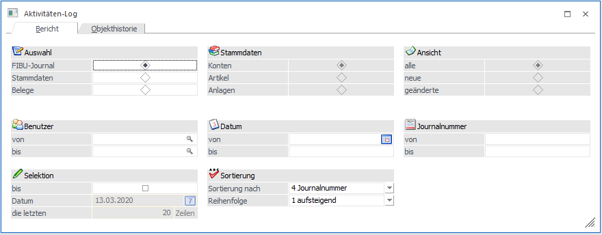
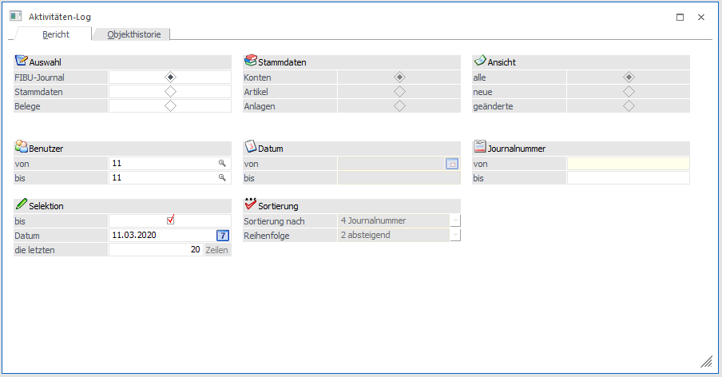
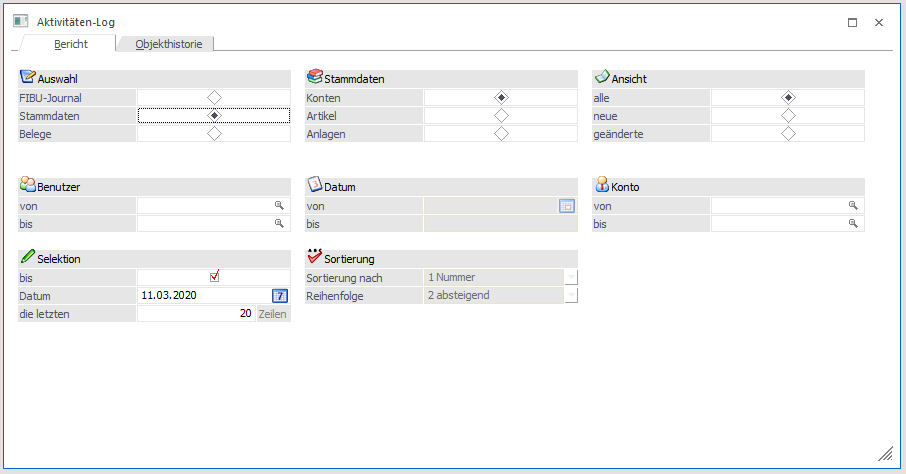
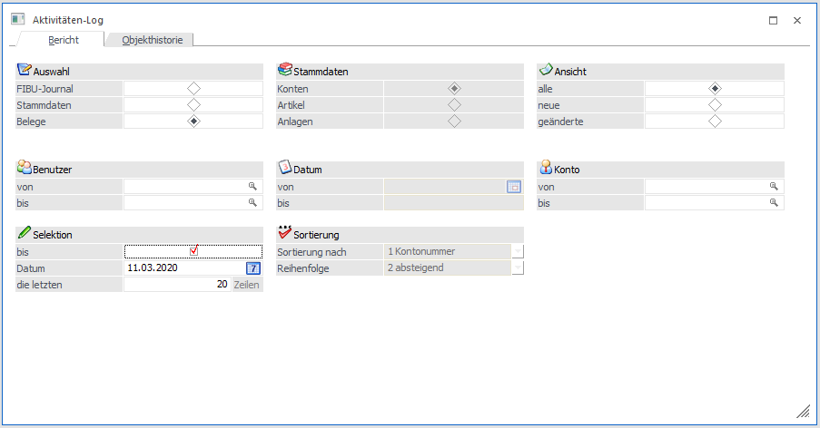
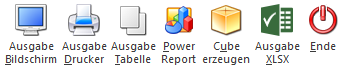
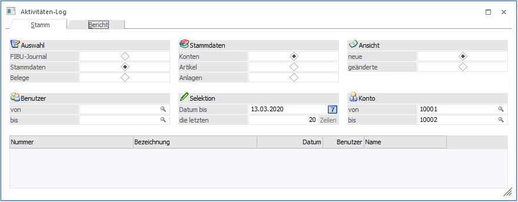
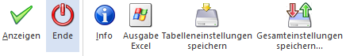
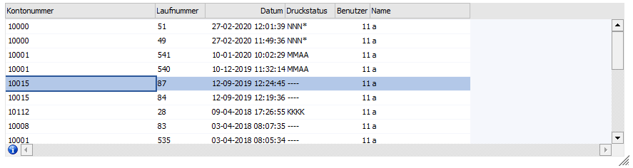
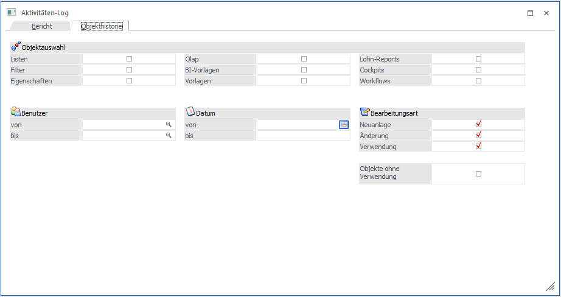

Im Programm WinLine START im Menüpunkt
1 WinLine START
1 Optionen
1 Aktivitäten Log
können zuletzt durchgeführte Arbeiten ausgegeben werden.

Es lässt sich so beispielsweise feststellen, welcher Benutzer wann welche Aktionen durchgeführt hat.
2.25.1. Register Bericht
In diesem Register können über die Ausgabevarianten der Ribbonleiste Daten angezeigt werden. Dabei können verschiedene Einschränkungen vorgenommen werden.
Auswahl - FIBU-Journal
Mit dieser Option werden die zuletzt gebuchten FIBU-Journalzeilen ausgewertet. Ist diese Auswahl getroffen, sind die Bereiche "Stammdaten" und "Ansicht" ausgegraut.

Zusätzlich können folgende Einschränkungen vorgenommen werden:
Benutzer
Ø von - bis
Es kann eine Einschränkung der Benutzer erfolgen, für die das Journal ausgewertet werden soll.
Datum
Ø von - bis
Hier kann eine Selektion des zu betrachtenden Zeitraumes vorgenommen werden.
Journalnummer
Ø von - bis
Die Ausgabe kann auf bestimmte Journalnummern eingegrenzt werden.
Selektion
Ø bis
Wird die Checkbox "bis" selektiert, so kann darunter ein Datum eingetragen werden.
Ø Datum
Es werden in Folge alle Buchungszeilen bis zu diesem Datum ausgewertet. Wird diese Selektion gewählt, dann ist "Sortierung", sowie die Eingabe unter "Datum" ausgegraut.
Ø die letzten x Zeilen
Hier kann die Anzahl der Journalzeilen eingetragen werden, die ausgewertet werden sollen.
Sortierung
Ø Sortierung nach
Ist unter "Selektion" die Checkbox nicht selektiert worden, kann an dieser Position die Sortierung wie folgt vorgenommen werden:
ü Buchungsart
ü Belegnummer
ü Datum
ü Journalnummer
ü User
Ø Reihenfolge
Die Reihenfolge kann entweder aufsteigend oder absteigend erfolgen.
Auswahl Stammdaten
Mit dieser Option können verschiedene Stammdatenbereiche ausgewertet werden.
Stammdaten
Dabei stehen die Bereiche
ü Konten
ü Artikel
ü Anlagen
zur Verfügung.

Ansicht
Ø alle
So können alle angelegten Datensätze angezeigt werden.
Ø neue
Damit werden alle neu angelegten Datensätze angezeigt, die im ausgewählten Bereich liegen.
Ø geänderte
Damit werden alle geänderten Datensätze angezeigt, die im ausgewählten Bereich liegen.
Konto, Artikel, Anlagen
Ø von - bis
Wird einer der Stammdatenbereiche
ü Konten
ü Artikel oder
ü Anlagen
gewählt, kann eine entsprechende Einschränkung innerhalb dieser Daten vorgenommen werden. Durch Drücken der F9-Taste kann über das jeweilige Matchcode-Fenster innerhalb der Stammdatenbereiche gesucht werden.
Benutzer
Ø von - bis
Es kann eine Einschränkung der Benutzer erfolgen, für welche die Stammdaten ausgewertet werden sollen.
Datum
Ø von - bis
Hier kann eine Selektion des zu betrachtenden Zeitraumes vorgenommen werden.
Konto
Ø von - bis
Es kann eine entsprechende Einschränkung innerhalb der Personenkonten vorgenommen werden.
Selektion
Ø bis
Wird die Checkbox "bis" selektiert, so kann darunter ein Datum eingetragen werden.
Ø Datum
Es werden in Folge alle Buchungszeilen bis zu diesem Datum ausgewertet. Wird diese Selektion gewählt, dann ist "Sortierung", sowie die Eingabe unter "Datum" ausgegraut.
Ø die letzten x Zeilen
Hier kann die Anzahl der Journalzeilen eingetragen werden, die ausgewertet werden sollen.
Sortierung
Ø Sortierung nach
Ist unter "Selektion" die Checkbox nicht selektiert worden, kann an dieser Position die Sortierung nach
ü Nummer
ü Name
ü Datum
vorgenommen werden.
Ø Reihenfolge
Die Reihenfolge kann entweder aufsteigend oder absteigend erfolgen.
Auswahl Belege
Mit dieser Option können die zuletzt bearbeiteten Belege - unabhängig in welcher Stufe diese Belege bearbeitet wurden - angezeigt werden.

Ansicht
Ø alle
Es werden alle Belege angezeigt, die innerhalb der getätigten Selektion als Ergebnis gefiltert worden sind.
Ø neue
Damit werden alle neu angelegten Belege angezeigt, die im ausgewählten Bereich liegen.
Ø geänderte
Damit werden alle geänderten Belege angezeigt, die im ausgewählten Bereich liegen - unabhängig von ihren Druckstatus und von der bearbeiteten Stufe.
Benutzer
Ø von - bis
Es kann eine Einschränkung der Benutzer erfolgen, für welche Belege ausgewertet werden sollen.
Datum
Ø von - bis
Hier kann eine Selektion des zu betrachtenden Zeitraumes vorgenommen werden.
Konto
Ø von - bis
Es kann eine entsprechende Einschränkung innerhalb der Personenkonten vorgenommen werden.
Selektion
Ø bis
Wird die Checkbox "bis" selektiert, so kann darunter ein Datum eingetragen werden.
Ø Datum
Wird hier ein Datum eingetragen, werden alle geänderten bzw. neu angelegten Belege bis zu diesem Datum ausgewertet. Wird diese Selektion gewählt, dann ist "Sortierung", sowie die Eingabe unter "Datum" ausgegraut.
Ø die letzten x Zeilen
Hier kann die Anzahl der Belege eingetragen werden, die ausgewertet werden sollen.
Sortierung
Ø Sortierung nach
Ist unter "Selektion" die Checkbox nicht aktiviert worden, kann an dieser Position die Sortierung nach
ü Kontonummer
ü Datum
ü User
vorgenommen werden.
Ø Reihenfolge
Die Reihenfolge kann entweder aufsteigend oder absteigend erfolgen.
Ribbon-Buttons

Ø Ausgabe Bildschirm
Die entsprechende Selektion wird am Bildschirm als Aktivitäten-Log ausgegeben. Im Register "Objekthistorie" steht dieser Button nicht zur Verfügung.
Ø Ausgabe Drucker
Die entsprechende Selektion wird auf einem Drucker (dem Spooler) ausgegeben ausgegeben. Im Register "Objekthistorie" steht dieser Button nicht zur Verfügung.
Ø Ausgabe Tabelle
Die entsprechende Selektion aus dem Register "Bericht" wird in das Register "Stamm" übergeben. In Folge kann über den Ribbon-Button "Anzeigen" eine Tabellenausgabe innerhalb des Fensters durchgeführt werden. Im Register "Objekthistorie" steht dieser Button nicht zur Verfügung.
Ø Power Report
Selektierte Werte können in den Power Report der WinLine überführt und ausgegeben werden.
Ø Cube erzeugen
Die Selektion wird innerhalb des Olap Viewers angezeigt.
Ø Ausgabe XLSX
Die Ausgabe wird extern in Microsoft Excel geöffnet.
Ø Ende
Durch Anklicken des Buttons bzw. durch Drücken der ESC-Taste wird das Fenster geschlossen.
2.25.2. Register Stamm

Sobald im Ribbon die Ausgabevariante "Ausgabe Tabelle" selektiert wird, werden zuvor getätigte Selektionen an das Register "Stamm" übergeben. Anschließend können die Werte über den Button "Anzeigen" (oder die F5-Taste) in der Fenster-Tabelle abgebildet werden.
Wird der Fokus auf die Tabelle gelegt, stehen im Ribbon weitere Funktionen zur Verfügung.
Ribbon-Buttons im Register "Stamm"

Ø Anzeigen
Selektierte Werte des Fensters "Aktivitäten-Log" werden innerhalb der Tabelle abgebildet.
Ø Ende
Das Fenster wird geschlossen (Esc-Taste).
Ø Info (nur für die Belege Auswahl)
Wenn der Fokus auf einen Datensatz der Tabelle gelegt und danach der Info-Button angeklickt wird (auch als Tabellen-Button auswählbar), so wird der Beleg in der zuletzt bearbeiteten Belegstufe angezeigt.

Ø Ausgabe Excel
Inhalte der Tabelle werden übergeben und extern in Microsoft Excel geöffnet.
Über das angezeigte Register "Bericht" kann der Wechsel erfolgen, sodass eine weitere Auswertung bzw. Anzeige selektierter Werte durchgeführt werden kann.
2.25.3. Register Objekthistorie
Die Objekthistorie ermöglicht eine Betrachtung der Objekte:
ü Listen
ü Filter
ü Eigenschaften
ü Olap
ü BI-Vorlagen
ü Vorlagen
ü Lohn-Reports
ü Cockpits
ü Workflows

Objektauswahl
Durch das Selektieren eines oder mehrerer Objekttypen kann definiert werden, was im weiteren Verlauf näher betrachtet werden soll.
Benutzer
Ø von - bis
Es kann eine Einschränkung der Benutzer erfolgen, für welche die Ausgabe erfolgen soll.
Datum
Ø von - bis
Hier kann eine Selektion des zu betrachtenden Zeitraumes vorgenommen werden.
Bearbeitungsart
Ø Neuanlage
So können alle neu angelegten Objekte angezeigt werden.
Ø Änderung
Damit werden alle geänderten Objekte angezeigt, die im ausgewählten Bereich liegen.
Ø Verwendung
Damit werden alle verwendeten Datensätze angezeigt, die im ausgewählten Bereich liegen.
Ø Objekte ohne Verwendung
Objekte die nicht verwendet werden, können so ausgegeben werden.